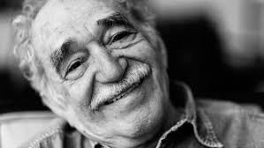

Gabriel García Márquez
Gabriel García Márquez fue un escritor, guionista, editor y periodista colombiano reconocido uno de los escritores en lengua española más importantes del mundo.
Por Mafalda Faggian

SU
BIOGRAFÍA
Gabriel José de la Concordia García Márquez nació en Aracataca, Colombia el 6 de marzo de 1927. A la corta edad de ocho años su familia decidió mudarse a Sucre, Bolivia. Fue en ese momento que Gabriel comenzó a adentrarse en la escritura.
Durante su educación secundaria en el colegio jesuita San José, publicó sus primeros poemas en la revista escolar Juventud. Luego fue enviado a estudiar a Bogotá donde lo reubican en el Liceo Nacional de Zipaquirá, ciudad ubicada a una hora de la capital, donde culminará sus estudios secundarios
La vida no es la que uno vivió, sino la que uno recuerda, y cómo la recuerda para contarla.
Gabriel García Márquez
La vida no es la que uno vivió, sino la que uno recuerda, y cómo la recuerda para contarla.
Gabriel García Márquez
Después de su graduación en 1947, García Márquez permaneció en Bogotá para estudiar derecho en la Universidad Nacional de Colombia, donde tuvo especial dedicación a la lectura. Poco después, publicó su primer cuento, La tercera resignación, que apareció el 13 de septiembre de 1947 en la edición del diario El Espectador.
Aunque su pasión era la escritura, continuó con la carrera de derecho. Después del llamado Bogotazo en el 1948 la universidad cerró indefinidamente y su pensión fue incendiada. García Márquez se trasladó a la Universidad de Cartagena y empezó a trabajar como reportero de El Universal. En 1950, desiste de convertirse en abogado para centrarse en el periodismo y se traslada de nuevo a Barranquilla para trabajar como columnista y reportero en el periódico El Heraldo.
Aunque García Márquez nunca terminó sus estudios superiores, algunas universidades, como la Universidad de Columbia de Nueva York, le han otorgado un doctorado honoris causa en letras.
SU OBRA
Tras abandonar la carrera de derecho y dedicarse al periodismo, García Márquez hizo varias publicaciones en distintos diarios
Su primer cuento, La tercera resignación, fue publicado en 1947, en el diario El Espectador. Sus primeros trabajos eran todos cuentos publicados en el mismo periódico desde 1947 hasta 1952. Durante estos años publicó un total de quince cuentos
Para La hojarasca, su primera novela, le llevó varios años encontrar un editor. Finalmente se publicó en 1955, y aunque la crítica fue excelente, la mayor parte de la edición se quedó en bodega.
Gabriel García Márquez tardó dieciocho meses en escribir Cien años de soledad. Una crónica que cuenta la historia de la familia Buendía en el pueblo de Macondo, que fue fundado por José Arcadio Buendía. El 30 de mayo de 1967 salió a la venta en Buenos Aires la primera edición de la novela. Tres décadas después se había traducido a 37 idiomas y vendido 25 millones de ejemplares en todo el mundo.
El amor en los tiempos del cólera, otra de sus obras más famosa, se publicó por primera vez en 1985. Está basada en las historias de dos parejas, una de las cuales está inspirada en la historia de amor de sus propios padres.
OBRAS DESTACADAS
- La hojarasca (1955)
- El coronel no tiene quien le escriba (1961)
- La mala hora (1962)
- Cien años de soledad (1967)
- El otoño del patriarca (1975)
- Crónica de una muerte anunciada (1981)
- El amor en los tiempos del cólera (1985)
- El general en su laberinto (1989)
- Del amor y otros demonios (1994)
NOVELAS
- Un niño como yo
- El cuento del gallo capón
- El rastro de tu sangre en la nieve
- Espantos de agosto
- La fotogenia del fantasma